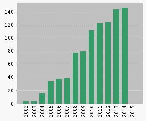
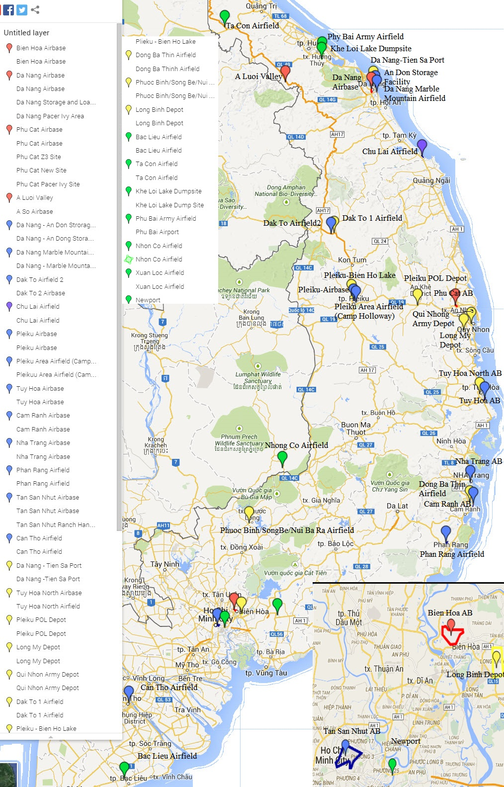

Hello, beautiful
null
{"entries":[{"ObjectType":"entry","EntryType":"article","EntryKey":"Nath:2015","Fields":{"author":"Matthias M. Mller and Ulrich G. Poschinger and Tommaso Calarco and Simone Montangero and Ferdinand Schmidt-Kaler","title":"Optimal Πü Phonon-to-Spin Mapping in a system of a trapped ion","journal":"arXiv:1504.02858","year":"2015","month":"","volume":"","pages":"","url":"http://arxiv.org/abs/1504.02858","eprint":"","file":" :publications/1504.02858v1.pdf:PDF","notes":""}},{"ObjectType":"entry","EntryType":"article","EntryKey":"Nath:2015","Fields":{"author":"Kilian","title":"Optimal Phonon-to-Spin Mapping in a system of a trapped ion","journal":"arXiv:1504.02858","year":"2015","month":"","volume":"","pages":"","url":"http://arxiv.org/abs/1504.02858","eprint":"","file":" :publications/1504.02858v1.pdf:PDF","notes":""}},{"ObjectType":"entry","EntryType":"article","EntryKey":"Fuerst:2013","Fields":{"author":"H. A. Fürßt and M. H. Goerz and U. G. Poschinger, M. Murphy and S. Montangero and T. Calarco and F. Schmidt-Kaler and K. Singer and C. P. Koch","title":"Controlling the transport of an ion: Classical and quantum mechanical solutions","journal":"New Journal of Physics","year":"2014","month":"","volume":"16","pages":"075007","url":"http://iopscience.iop.org/1367-2630/16/7/075007/refs","eprint":"","file":" :publications/Fuerst2014.pdf:PDF","note":""}},{"ObjectType":"entry","EntryType":"article","EntryKey":"RevModPhys.82.2609","Fields":{"title":"Colloquium : Trapped ions as quantum bits: Essential numerical tools","author":"Singer, Kilian and Poschinger, Ulrich and Murphy, Michael and Ivanov, Peter and Ziesel, Frank and Calarco, Tommaso and Schmidt-Kaler, Ferdinand","journal":"Rev. Mod. Phys.","volume":"82","issue":"3","pages":"2609--2632","numpages":"0","year":"2010","month":"Sep","publisher":"American Physical Society","doi":"10.1103/RevModPhys.82.2609","url":"http://link.aps.org/doi/10.1103/RevModPhys.82.2609"}}],"errors":[]}
null
{"ObjectType":"entry","EntryType":"article","EntryKey":"Nath:2015","Fields":{"author":"Matthias M. Mller and Ulrich G. Poschinger and Tommaso Calarco and Simone Montangero and Ferdinand Schmidt-Kaler","title":"Optimal Πü Phonon-to-Spin Mapping in a system of a trapped ion","journal":"arXiv:1504.02858","year":"2015","month":"","volume":"","pages":"","url":"http://arxiv.org/abs/1504.02858","eprint":"","file":" :publications/1504.02858v1.pdf:PDF","notes":""}}
..............
{"ObjectType":"entry","EntryType":"article","EntryKey":"Nath:2015","Fields":{"author":"Kilian","title":"Optimal Phonon-to-Spin Mapping in a system of a trapped ion","journal":"arXiv:1504.02858","year":"2015","month":"","volume":"","pages":"","url":"http://arxiv.org/abs/1504.02858","eprint":"","file":" :publications/1504.02858v1.pdf:PDF","notes":""}}
..............
{"ObjectType":"entry","EntryType":"article","EntryKey":"Fuerst:2013","Fields":{"author":"H. A. Fürßt and M. H. Goerz and U. G. Poschinger, M. Murphy and S. Montangero and T. Calarco and F. Schmidt-Kaler and K. Singer and C. P. Koch","title":"Controlling the transport of an ion: Classical and quantum mechanical solutions","journal":"New Journal of Physics","year":"2014","month":"","volume":"16","pages":"075007","url":"http://iopscience.iop.org/1367-2630/16/7/075007/refs","eprint":"","file":" :publications/Fuerst2014.pdf:PDF","note":""}}
..............
{"ObjectType":"entry","EntryType":"article","EntryKey":"RevModPhys.82.2609","Fields":{"title":"Colloquium : Trapped ions as quantum bits: Essential numerical tools","author":"Singer, Kilian and Poschinger, Ulrich and Murphy, Michael and Ivanov, Peter and Ziesel, Frank and Calarco, Tommaso and Schmidt-Kaler, Ferdinand","journal":"Rev. Mod. Phys.","volume":"82","issue":"3","pages":"2609--2632","numpages":"0","year":"2010","month":"Sep","publisher":"American Physical Society","doi":"10.1103/RevModPhys.82.2609","url":"http://link.aps.org/doi/10.1103/RevModPhys.82.2609"}}
..............
{"_contents":["bbbbb.html","ccccc.html","de.png","index.html","index.jpg","styles.css","styles.scss.bak","us.png","xxxx.html"],"_data":{"xxxx":{"layout":"","menu":"A!menu","title":"Hello World."},"bbbbb":{"title":"Hello World."},"ccccc":{"title":"Hello World."},"ddddd":{"menu":"DDe","title":"Dede"}},"ddddd":{"_contents":["aaaaa.css","aaaaa.html","aaaaa0x.png","aaaaa1x.png","aaaaa2.html","aaaaa2x.png","aaaaa3x.png","aaaaa4x.png","example.css","example.html","index.html","moon.jpg"],"_data":{"aaaaa":{"title":"Hello World."},"ccccc":{"title":"Hello World."},"example":{"title":"Hello World."}},"ccccc":{"_contents":["aaaaa.html","ccccc.html","hhh.html","index.html"],"_data":{"aaaaa":{"title":"Hello World."},"ccccc":{"title":"Hello World."},"hhh":{"title":"Hello World."}}}},"de":{"_contents":["aaaaa.html","bbbbb.html","ccccc.html","index.html"],"_data":{"aaaaa":{"menu":"AmenuDe","title":"Hello World."},"bbbbb":{"title":"Hello World."},"ccccc":{"title":"Hello World."},"ddddd":{"menu":"DDe","title":"Dede"}},"ddddd":{"_contents":["aaaaa.html","ccccc.html","hhh.html","index.html"],"_data":{"aaaaa":{"title":"Hello World."},"ccccc":{"title":"Hello World."},"hhh":{"title":"Hello World."}},"ccccc":{"_contents":["aaaaa.html","ccccc.html","hhh.html","index.html"],"_data":{"aaaaa":{"title":"Hello World."},"ccccc":{"title":"Hello World."},"hhh":{"title":"Hello World."}}}},"images":{"_contents":["dlme.jpg","ffefe.tfdf","y.jpg"],"jjj":{"_contents":["dlme.jpg"]}}},"images":{"_contents":["dlme.jpg","ffefe.tfdf","y.jpg"],"jjj":{"_contents":["dlme.jpg"]}}}
Sitemap


